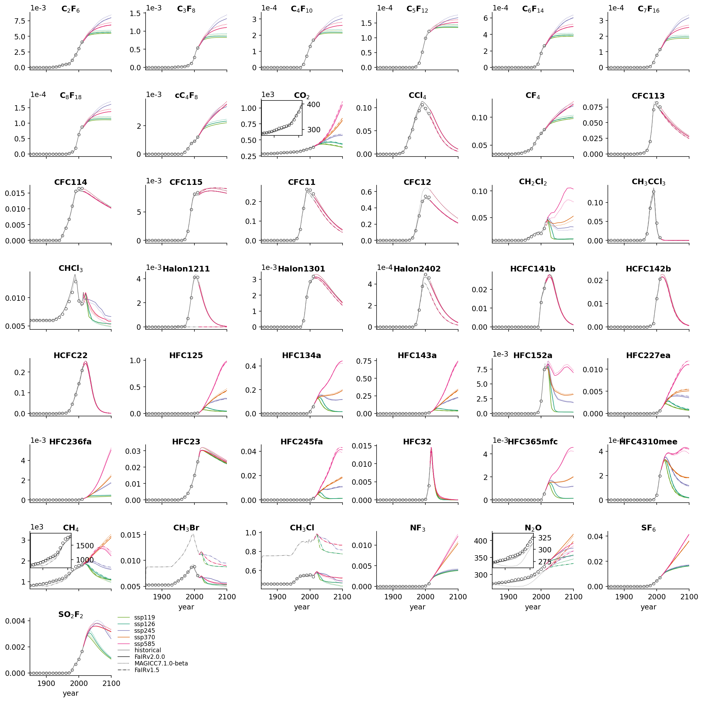

Leach et al. 2021 · FaIR v2 climate response
Run the archived FaIR v2 workflow and compare historical and scenario responses with the paper.
Reproduction summary
The EMH report tracks figures redrawn from new FaIR outputs and the remaining ensemble constraints and figures. Open the EMH report for the comparisons and supporting data.
Quantitative comparison
1% CO₂ increase, year 70
Configured TCR 1.79EMH simulation 1.796
The run checks the default transient climate response parameter with an initial CO₂ concentration of 278 ppm. The paper's Figure 3 uses a protocol starting at 284 ppm.
Reproduced figures


EMH simulation evidence
0 recorded source completions 3 registered cases
Models in the catalog include fair.